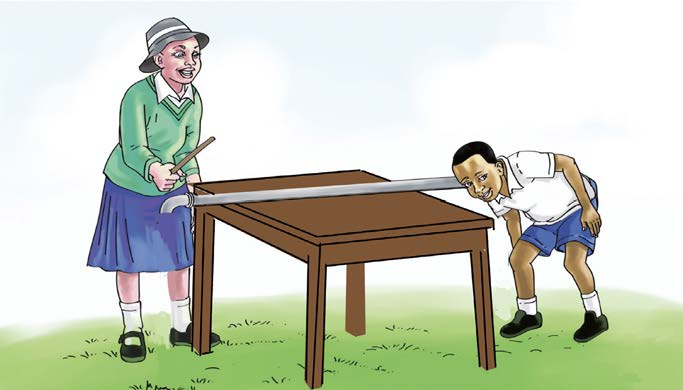

Activity 9
Investigating how sound travels through metal
Materials:A long metal rod, a table and a ruler
Procedure
1.Take a long piece of metal and place it on the table as shown in Figure 16.

2.Ask your friend to place his/her ear/hand on one end of the metal piece.
3.Tap the metal with a ruler.
4.Ask your friend what he/she hears/feels and write it down.
5.Place your ear/hand on one end of the metal.
6.Ask your friend to tap the metal at another end.
7.Write down what you hear/feel.